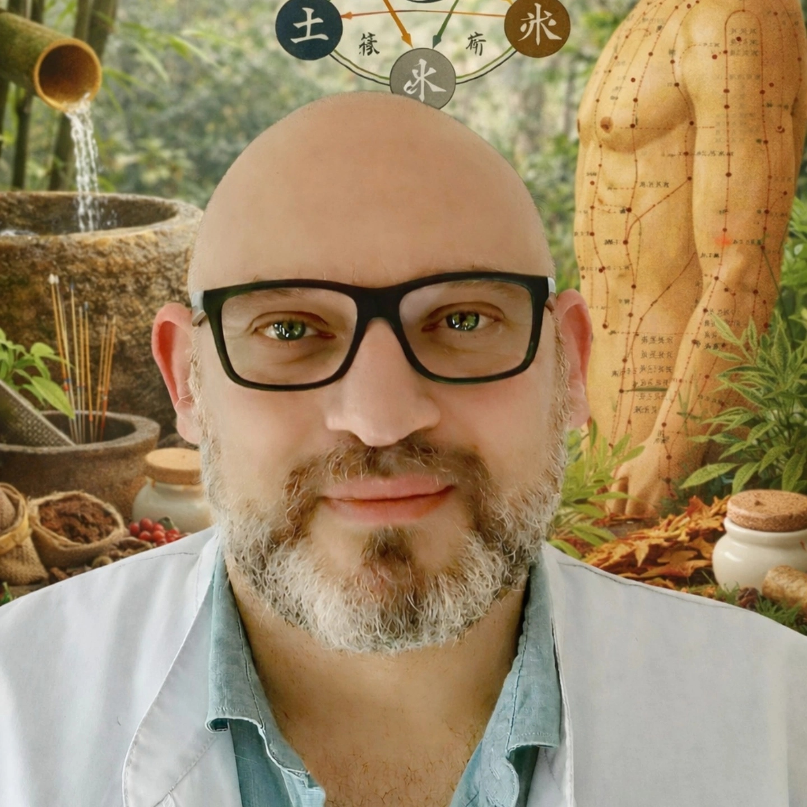

Gérald Bergès
Acupuncture & Médecine traditionnelle chinoise
Retrouvez équilibre et bien-être grâce à l'acupuncture et aux techniques ancestrales de la médecine chinoise.
Bienvenue dans mon cabinet d'acupuncture. Fort de plusieurs années d'expérience et d'une formation approfondie en médecine traditionnelle chinoise, je vous accompagne dans votre quête de santé et d'harmonie.
Mon approche holistique prend en compte l'ensemble de votre être : corps, esprit et émotions. Chaque séance est personnalisée selon vos besoins spécifiques.
Consultation initiale : 70€ (1h30)
Séance de suivi : 60€ (1h)
Forfait 5 séances : 270€
Certaines mutuelles prennent en charge tout ou partie des séances d'acupuncture. N'hésitez pas à vous renseigner.
Adresse : 12 Rue de la Santé, 75000 Paris
Téléphone : 06 12 34 56 78
Email : contact@geraldberges.fr
Horaires :
Lundi - Vendredi : 9h - 19h
Samedi : 9h - 13h